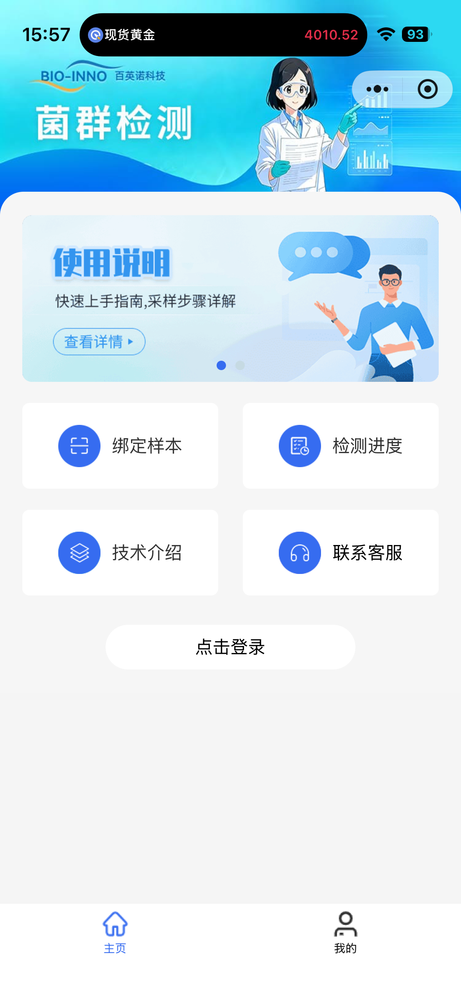
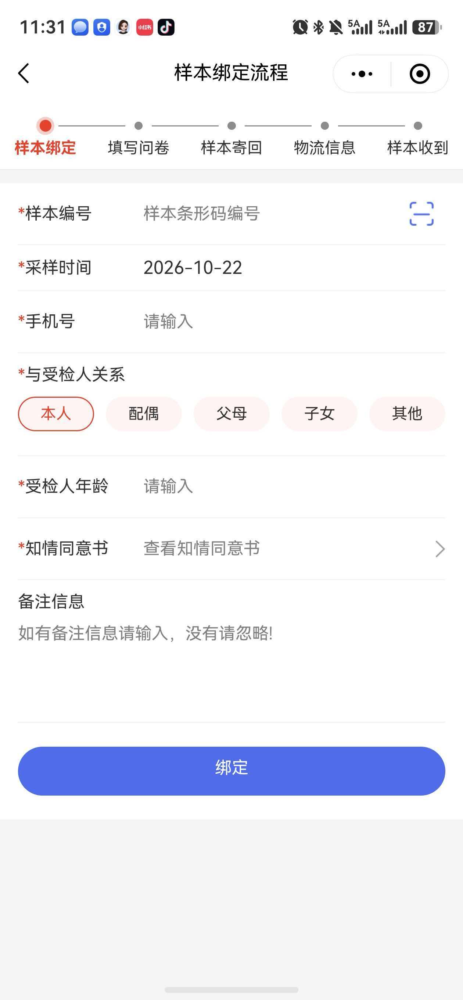
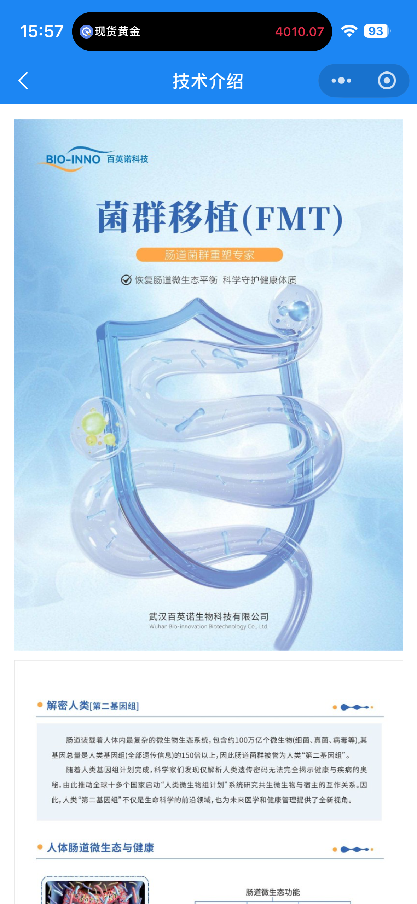

C 端小程序「百英诺 · 菌群检测」改版产品开发方案
1. 背景与目标
1.1 背景
企业已有一个面向受检人的「菌群检测」小程序（BIO-INNO 百英诺科技），其样式与流程比当前 C 端「检测商城」更贴合服务场景：
- 首页是服务门户而非商城：品牌主视觉 + 使用说明轮播 + 四宫格（绑定样本 / 检测进度 / 技术介绍 / 联系客服）+ 底部 2 Tab（主页 / 我的）；
- 核心流程是样本全周期五步向导：样本绑定 → 填写问卷 → 样本寄回 → 物流信息 → 样本收到，绑定表单含扫码、采样时间、与受检人关系、知情同意书等医疗场景字段；
- 配套一份 21 题的结构化健康问卷（饮食、排便、疾病史等），替代当前激活页的自由文本字段。
业务要求：参照该小程序的样式与流程，对现有 apps/mini-c 进行改版，使 C 端体验与企业既有产品对齐。
1.2 目标
- 受检人打开小程序，第一屏即可感知百英诺品牌（蓝色主视觉 + logo +「菌群检测」标题），1 次点击内到达绑定 / 进度 / 介绍 / 客服任一服务；
- 样本绑定流程与参考五步向导对齐：步骤条可见、字段完整（样本编号扫码 / 采样时间 / 手机号 / 与受检人关系 / 年龄 / 知情同意书 / 备注）；
- 健康问卷按《样本信息问卷调查表》结构化采集，题型覆盖单选 / 多选 / 文本 / 数字，答案随样本归档供报告解读；
- 受检人可在「检测进度」自助查看样本状态并登记寄回运单号，减少进度类客服咨询；
- 保留现有购买 → 激活 → 报告业务闭环与后端链路，全部文案符合医疗 / 大健康合规口径（§6）。
1.3 非目标（本期不做）
- 不改后端佣金 / 对账 / 预付款等金融链路；
- 不做真实物流轨迹对接（快递 100 等），本期仅登记与展示运单号（决策点 D5）；
- 不做微信扫码真机联调（H5 验收以手动输入 + 扫码按钮占位，代码保持 weapp 可编译）；
- 不做会员 / 积分 / 优惠券等营销玩法；
- 不动 weapp 端发布配置（本次仅 H5 验收）。
2. 参考资料总览
| 资料 | 内容 | 用途 |
|---|---|---|
| 截图 IMG_1774（首页） | 蓝色品牌头部 + 使用说明轮播 + 服务四宫格 + 登录胶囊 + 底部 2 Tab | §4.1 首页改造依据 |
| 截图 36.JPG（样本绑定流程） | 五步步骤条 + 7 项绑定表单 + 通栏「绑定」按钮 | §4.2 绑定页改造依据 |
| 截图 IMG_1775（技术介绍） | 蓝色导航 + FMT 长图文科普页 | §4.5 技术介绍页依据 |
| 样本信息问卷调查表.docx | 3 条填写须知 + 21 题（实 22 问，见 §9 瑕疵记录） | §4.3 问卷页字段表 |
| docs/归档/ 8 份企业资料 | 宣讲 PPT / 百问百答 / 产品画册等 | 品牌与科普文案来源（不虚构数据） |
#2B7FFF，深蓝导航 ≈ #1B6FE0，浅蓝底 ≈ #EAF4FF；卡片白底圆角 12px 浅阴影；页面背景浅灰 #F7F8FA；主按钮为蓝色通栏大圆角胶囊；表单标签左对齐 + 必填红星；单选项为圆角胶囊（选中蓝边蓝字）；步骤条横向 5 节点、当前节点蓝色高亮。参考小程序与项目三端统一主色 #1677ff 同为蓝色系，本次改版不新增主题色（§3.3）。
3. 全局改造决策
3.1 信息架构：底部 2 Tab + 页面地图
对齐参考小程序，新增底部 主页 / 我的 两个 Tab。实现上复制 mini-b 已验证的 AppTabbar.tsx 自定义底栏 + Icon.tsx 零依赖 SVG 图标模式（不用 Taro 原生 tabBar 配置，与 mini-b 保持一致，预留消息角标能力）。
flowchart TD HOME["主页 pages/index（Tab）"] --> BIND["绑定样本 → pages/activate
五步向导 Step1"] HOME --> PROG["检测进度 → pages/progress（新增）"] HOME --> TECH["技术介绍 → pages/tech-intro（新增）"] HOME --> CS["联系客服 → 半屏面板（新增组件）"] HOME --> MALL["在售检测盒 → product / order / pay-result（保留）"] BIND --> QUIZ["健康问卷 pages/questionnaire（新增）
五步向导 Step2"] BIND --> PROG QUIZ --> PROG MINE["我的 pages/profile（Tab）"] --> REPORTS["我的报告 reports（保留）"] MINE --> ORDERS["我的订单 orders（保留）"] MINE --> NOTICE["消息中心 notifications（保留）"] MINE --> PROG style HOME fill:#1677ff,color:#fff style MINE fill:#1677ff,color:#fff style PROG fill:#e8ffea style QUIZ fill:#e8ffea style TECH fill:#e8ffea style CS fill:#e8ffea
3.2 样本状态机 ↔ 五步向导映射（全方案枢轴）
后端样本状态机已完整存在（apps/api/prisma/schema.prisma 的 SampleStatus），参考流程的五步可零成本映射。步骤条在绑定页 / 问卷页 / 进度页三处复用同一组件，当前节点由样本实际状态推导（而非页面顺序），保证从任意入口进入时显示一致。
stateDiagram-v2 [*] --> generated : 盒码生成 generated --> activated : ①样本绑定 POST /box-codes/activate activated --> activated : ②填写问卷 PATCH /samples/:id/questionnaire activated --> pending_mail : 待寄回 pending_mail --> in_transit : ③样本寄回 POST /samples/:id/mail（运单号） in_transit --> received_by_lab : ④物流信息 → ⑤样本收到（实验室签收） received_by_lab --> testing : 检测中 testing --> report_generated : 报告生成 report_generated --> published : 报告发布（C 端可见） in_transit --> abnormal : 样本异常 received_by_lab --> abnormal : 样本异常 generated --> voided : 作废
| 向导步骤 | 样本状态 | 用户动作 | 系统行为（接口现状） |
|---|---|---|---|
| ① 样本绑定 | generated → activated | 填绑定表单 + 同意知情同意书 →「绑定」 | POST /box-codes/activate（需扩展字段，§5.2） |
| ② 填写问卷 | activated（问卷待填） | 逐题作答 → 提交 | 新增 PATCH /samples/:id/questionnaire（§5.3） |
| ③ 样本寄回 | pending_mail | 查看寄回指引 → 寄出后填运单号 | POST /samples/:id/mail ✅ 已有（trackingNo）→ in_transit |
| ④ 物流信息 | in_transit | 查看运单号与寄出时间 | 展示登记信息；真实轨迹对接 [TBD]（D5） |
| ⑤ 样本收到 | received_by_lab | 仅查看 | 实验室 POST :id/receive（LAB/PLATFORM）✅ 已有 |
| （后续） | testing → report_generated → published | 在「我的报告」查看 | 现有 reports 页承接，向导闭环 |
异常态展示：abnormal（样本异常，引导联系客服 / 重采）、voided（已作废）在进度页以警示条展示，不出现在步骤条内。
3.3 主题与令牌
- 沿用
packages/shared/src/tokens.ts三端统一主色#1677ff与app.scss顶部--mall-*变量块，不新增主题色； - 新组件（步骤条 / 胶囊单选 / 时间线 / 宫格图标）激活色一律
var(--mall-color-primary)；NutUI 组件主题沿用现有NUTUI_THEME_VAR_MAP覆盖； - 图标复制 mini-b
components/Icon.tsx（SVG mask + currentColor）；品牌素材logo.png、cert-medical-device.jpeg自 mini-bsrc/assets/复制（注意types.d.ts补declare module '*.jpeg'，mini-b 已踩此坑）。
4. 逐页改造方案
每页按统一三段式展开：参考规格取自截图实测，现状为当前代码事实，改造点为可执行任务。
4.1 首页 pages/index/index.tsx

- 蓝色渐变品牌头部：左上 logo「BIO-INNO 百英诺科技」+ 大标题「菌群检测」，右侧医护人员插画；
- 使用说明轮播卡：白底圆角，标题「使用说明 / 快速上手指南,采样步骤详解」+ 描边胶囊「查看详情 ▸」+ 轮播指示点；
- 服务四宫格（2×2）：绑定样本 / 检测进度 / 技术介绍 / 联系客服，蓝色圆形图标 + 白卡；
- 登录胶囊：未登录显示白色胶囊「点击登录」；
- 底部 Tab：主页 / 我的。
注：参考首页无商品售卖区块，为纯服务门户；商城去留见决策点 D2。
pages/index/index.tsx：hero 文案块（「C 端 · 检测商城」）→ 在售检测盒列表（GET /sales-orders/storefront）→ 5 个 emoji 入口宫格（扫码激活/订单/报告/消息/隐私）→ 登录或退出按钮。无品牌头部、无轮播、无 Tab 栏。
| # | 改造项 | 规格 | 优先级 |
|---|---|---|---|
| 1 | 品牌头部 | 蓝色渐变背景 + logo（复用 assets/logo.png）+「菌群检测」大标题 + 插画占位（企业素材 [TBD]） | P0 |
| 2 | 使用说明轮播 | NutUI Swiper，2 张前端常量：①使用说明「快速上手指南，采样步骤详解」→ tech-intro「采样指引」锚点；②检测流程「绑定→问卷→寄回→收报告」→ progress 页 | P0 |
| 3 | 服务四宫格 | 2×2 白卡 + 蓝色圆形 SVG 图标；未登录点击「绑定/进度」跳登录页（沿用 getToken() 守卫） | P0 |
| 4 | 在售检测盒区块保留 | 现有商品卡片列表原样下移至宫格后，「立即购买」链路不变（D2 建议保留） | P0 |
| 5 | 登录态区 | 未登录：通栏白色胶囊「点击登录」；已登录：显示「手机号 · 已登录」，移除退出按钮（迁至「我的」） | P0 |
| 6 | 底部 Tab | 挂 AppTabbar（主页高亮） | P0 |
| 7 | 移除 | hero 文案块、emoji 入口宫格（能力由四宫格 +「我的」承接） | P0 |
4.2 样本绑定流程页 pages/activate/index.tsx

- 导航栏标题「样本绑定流程」；
- 五步步骤条：样本绑定（高亮）→ 填写问卷 → 样本寄回 → 物流信息 → 样本收到；
- 白底表单卡（
*必填）＋ 底部通栏蓝色大圆角「绑定」按钮。
| 字段 | 控件 | 校验 / 规则 | 参考截图依据 |
|---|---|---|---|
| *样本编号 | 输入框 + 扫码图标 | 去空格转大写；失焦触发 GET /box-codes/preview/:code 预览；H5 点扫码提示手动输入，weapp 接 Taro.scanCode | 占位「样本条形码编号」+ 右侧扫码图标 |
| *采样时间 | 日期选择器 | 默认当天；不可选未来日期 [假设，TBD 是否允许补录] | 截图默认 2026-10-22（当天） |
| *手机号 | 数字输入框 | ^1\d{10}$；登录用户默认带入账号手机号可改 | 占位「请输入」 |
| *与受检人关系 | 胶囊单选 | 本人 / 配偶 / 父母 / 子女 / 其他；默认选中「本人」 | 截图「本人」红边选中态（改版为蓝边） |
| *受检人年龄 | 数字输入框 | 整数 1–120 | 占位「请输入」 |
| *知情同意书 | 链接行 + 勾选 | 「查看知情同意书 >」打开全文弹层（Dialog），查看并勾选「已阅读并同意」后才可提交；正文 [TBD] 待法务稿 | 截图右箭头链接行 |
| 备注信息 | 多行文本 | 选填，≤200 字 | 占位「如有备注信息请输入，没有请忽略!」 |
pages/activate/index.tsx（271 行单页表单）：盒码输入 +「查询盒码」预览 + 动态问卷文本字段（questionnaireFields 仅支持 key/label/required/placeholder）+ 报告授权开关 + 同意书裸开关 →「激活」。无步骤条、无扫码按钮、无采样时间 / 手机号 / 关系 / 备注字段，知情同意书不可查看正文；问卷与绑定混在一页。
| # | 改造项 | 规格 | 优先级 |
|---|---|---|---|
| 1 | 挂步骤条 | 顶部 StepFlow 组件，当前节点 = ①（未提交）或按样本状态推导 | P0 |
| 2 | 表单按上表重建 | 7 字段齐备；保留盒码预览卡（商品/SKU/状态，已激活/已作废禁用提交）与采样指导视频（guideVideoUrl） | P0 |
| 3 | 知情同意书弹层 | 裸开关 → 查看全文 Dialog + 勾选确认；consentGiven 语义不变 | P0 |
| 4 | 提交扩展 | 调扩展后 POST /box-codes/activate（§5.2）；成功后按 D3 进入问卷（方案 A）或提示去填问卷（方案 B） | P0 |
| 5 | 报告授权开关保留 | reportAuthorization 位置下移，文案不变 | P0 |
| 6 | 「关联订单 ID」降级 | 隐藏高级项，默认从路由参数 orderId 带入，不占表单视觉 | P1 |
4.3 健康问卷页 pages/questionnaire/index.tsx 新增
文档开头 3 条填写须知须原样展示为头部须知卡：
- 依据您填写的这份健康信息表，我们将对您目前的健康状况进行一次全面、系统地评估；
- 本表填写的内容关系到检测报告的准确性，请您务必完整、客观地填写；
- 健康信息涉及您的个人隐私，我们将对您所有的个人资料严格保密。
正文 21 题（原文编号瑕疵，重排为 Q1–Q22，见 §9）：填空 8 题、单选 10 题、多选 3 题，含互斥项与备注联动。
问卷字段总表（内置默认题单；企业确认瑕疵后以商品配置为准）
| # | key | 题干 | 题型 | 必填 | 选项 / 规则 |
|---|---|---|---|---|---|
| Q1 | name | 姓名 | text | 是 | — |
| Q2 | sampleNo | 样本编号 | text | 是 | 绑定时自动带入，只读 |
| Q3 | phone | 联系方式（手机号码） | text | 是 | ^1\d{10}$，默认带入绑定手机号 |
| Q4 | region | 居住地区 | text | 是 | — |
| Q5 | age | 年龄 | number | 是 | 整数 1–120，默认带入受检人年龄 |
| Q6 | gender | 性别 | radio | 是 | 男 / 女 |
| Q7 | heightCm | 身高（厘米） | number | 否 | 50–250 |
| Q8 | weightKg | 体重（公斤） | number | 否 | 2–300 |
| Q9 | stress | 是否有精神压力/焦虑 | radio | 是 | 经常 / 偶尔 / 从不 |
| Q10 | exercise | 是否经常锻炼身体 | radio | 是 | TBD 原文选项为「5-6/6-7/7-8/8 小时以上」，疑睡眠时长错配，待企业确认（§9） |
| Q11 | stayUp | 是否经常熬夜 | radio | 是 | 经常 / 偶尔 / 从不 |
| Q12 | smoking | 是否经常抽烟 | radio | 是 | 经常 / 偶尔 / 从不 |
| Q13 | dietPreference | 饮食偏好 | checkbox | 是 | 偏荤 / 偏素 / 偏辣 / 偏甜 / 其他（选「其他」展开备注） |
| Q14 | dietRegularity | 饮食是否规律 | radio | 是 | 非常规律 / 比较规律 / 不规律 |
| Q15 | allergy | 食物/药物过敏情况 | radio | 是 | 有 / 无 / 不确定；选「有 / 不确定」展开备注 |
| Q16 | gutIssues | 近一月肠道健康问题 | checkbox | 是 | 消化不良打嗝 / 腹胀胀气爱放屁 / 腹痛 / 排便不规律 / 大便不成形 / 排便困难 / 食欲不振 / 腹泻便秘交替 / 以上均无（互斥） |
| Q17 | stoolShape | 近一月大便形状 | radio | 是 | 香蕉状成型软便 / 糊状软便 / 粘液血便 / 稀水样便 / 羊屎蛋样粪便 |
| Q18 | bowelFrequency | 近一月排便频率 | radio | 是 | 每天1-2次 / 每周2次 / 每周1次 / 每周少于1次 / 每月少于1次 |
| Q19 | antibiotics | 近期是否使用抗生素 | radio | 是 | 一周内 / 半个月内 / 一个月内 / 三个月内 / 无 |
| Q20 | supplements | 目前有无服用药品/营养补充剂/益生菌产品 | radio | 是 | 有 / 无 / 其他；选「有 / 其他」展开备注 |
| Q21 | diagnosedDiseases | 基于医生诊断，是否有以下疾病 | checkbox | 是 | 33 项 + 其他（选「其他」展开备注）；[建议增「无」互斥项，TBD]： 肥胖、腹泻、便秘、哮喘、粉刺痤疮、皮肌炎、炎症性肠病(IBD)、肠易激综合征(IBS)、溃疡性结肠炎(UC)、麸质敏感性肠病、克罗恩病(CD)、大肠癌(结肠癌、直肠癌)、慢性疲劳综合征、痛风(原发性、继发性)、类风湿性关节炎、系统性红斑狼疮、甲状腺机能亢进、多发性硬化症、Ⅰ型糖尿病、Ⅱ型糖尿病、心肌炎、冠心病、高血压性心脏病、中风(脑卒中、卒中)、帕金森病、抑郁症、焦虑症、自闭症(儿童孤独症)、阿尔茨海默症(老年痴呆)、精神分裂症、糙皮症、癫痫 |
| Q22 | surgeryHistory | 是否有手术史及遗传病史 | textarea | 是 | 有请详填，无填「无」 |
无独立问卷页。activate 页内嵌的动态字段仅支持纯文本输入（fallback 为性别/年龄两框），无题型、无选项、无互斥与备注联动。
改造点| # | 改造项 | 规格 | 优先级 |
|---|---|---|---|
| 1 | 问卷引擎组件 | 按 §5.5 schema 渲染 5 种题型；radio/checkbox 用胶囊样式（对齐绑定页关系单选） | P0 |
| 2 | 互斥与备注联动 | checkbox 选 exclusiveOptions（如「以上均无」）清空其他项；选 remarkOn 选项展开备注输入 | P0 |
| 3 | 提交校验 | 必答未答拦截并滚动定位第一道未答题；提交 PATCH /samples/:id/questionnaire（§5.3） | P0 |
| 4 | 入口守卫 | 仅存在 activated 且问卷未填样本时可提交；已填样本进入只读回看 [假设，TBD D9] | P0 |
| 5 | 字段来源 | 优先商品 questionnaireFields 配置；未配置用内置 22 题；废弃现有性别/年龄兜底 | P0 |
| 6 | 步骤条 | 顶部 StepFlow 当前节点 = ②；提交成功 toast 后跳进度页 | P0 |
4.4 检测进度页 pages/progress/index.tsx 新增
参考流程中「样本寄回 → 物流信息 → 样本收到」三步在向导内推进；本方案由进度页承接：步骤条 + 状态时间线 + 当前状态操作区。
现状无独立进度页；pages/profile 内嵌样本列表仅显示状态标签。后端 GET /samples/me 已返回 events（按时间升序的状态事件），POST /samples/:id/mail（CUSTOMER）已支持登记运单号——前端零新接口依赖即可上线本页（§5.4）。
| # | 改造项 | 规格 | 优先级 |
|---|---|---|---|
| 1 | 样本切换 | 多样本时顶部横向切换（样本编号 + 关系标签如「本人」） | P0 |
| 2 | 步骤条 + 时间线 | StepFlow 按选中样本状态推导当前节点；NutUI Timeline 展示各节点完成时间（数据 = events），当前节点蓝色、未来节点灰色 | P0 |
| 3 | 状态操作区 | pending_mail：寄回地址 + 采样/打包指引 + 运单号输入 → POST :id/mail；in_transit：展示运单号与寄出时间（轨迹 [TBD]）；published：「查看报告」→ reports；abnormal：警示条 + 联系客服 | P0 |
| 4 | 空态 | 无样本：空插画 +「去绑定样本」按钮 → activate | P0 |
| 5 | 问卷待填提醒 | activated 且问卷未填：醒目引导条「请填写健康问卷」→ questionnaire | P0 |
4.5 技术介绍页 pages/tech-intro/index.tsx 新增

- 蓝色导航栏「技术介绍」；
- 头图区：BIO-INNO logo +「菌群移植(FMT) · 肠道菌群重塑专家」+ 插画 + 公司全称落款；
- 章节式长图文：章节标题带蓝色圆点符号（如「解密人类[第二基因组]」「人体肠道微生态与健康」），配图 + 段落。
整页缺失。
改造点| # | 改造项 | 规格 | 优先级 |
|---|---|---|---|
| 1 | 长图文页 | 前端常量驱动章节数组（标题/配图/正文），内容取自归档宣讲 PPT 可对外科普内容（做法同商家端 §4），不虚构数据 | P1 |
| 2 | 「采样指引」锚点 | 供首页轮播「查看详情」跳入定位 | P1 |
| 3 | 免责声明常驻 | 文末固定「本内容仅作健康科普，不构成医疗诊断建议」 | P0 |
| 4 | 配图素材 | 企业素材 [TBD]；未取得前用占位插画样式 | P1 |
4.6 联系客服面板 components/ServicePanel.tsx 新增组件
首页四宫格「联系客服」入口；参考为蓝色圆形耳机图标。
现状无任何客服入口。归档资料中不存在服务热线 / 客服微信号（项目记忆已确认：PPT 内手机号系文档作者信息，不可用作客服展示）。
改造点| # | 改造项 | 规格 | 优先级 |
|---|---|---|---|
| 1 | 半屏面板组件 | 客服电话行（号码 [TBD] +「拨打」Taro.makePhoneCall）；客服微信行（微信号 [TBD] +「复制微信号」）；工作时间说明 [TBD]；未取得前显示「客服信息即将上线」占位，不编造号码 | P1 |
| 2 | 场景复用 | 进度页 abnormal 态、绑定失败等场景共用此面板 | P1 |
4.7 我的页 pages/profile/index.tsx
参考仅有 Tab 入口，内页未提供截图；按商家端「我的」模式与现有能力组合设计。
现状pages/profile/index.tsx：实名认证表单（realName/idCardNo/gender）+ 归属与授权展示（GET /customers/me、GET /customers/me/ownership）。无用户卡、无入口宫格；退出登录在首页。
| # | 改造项 | 规格 | 优先级 |
|---|---|---|---|
| 1 | 用户卡 | 头像占位 + 手机号 + 实名状态标签（已实名/未实名） | P0 |
| 2 | 服务入口宫格 | 线性 SVG 图标：我的报告 / 我的订单 / 检测进度 / 消息中心（未读角标沿用现有接口） | P0 |
| 3 | 账户区 | 实名认证表单与授权开关原能力保留、样式归入卡片 | P0 |
| 4 | 关于区 | 技术介绍入口、知情同意书/隐私政策查看、免责声明 | P1 |
| 5 | 退出登录 + Tab | 通栏描边「退出登录」（自首页迁入，clearToken + reLaunch）；挂 AppTabbar（我的高亮） | P0 |
4.8 登录页 pages/login/index.tsx
账号密码表单，逻辑完整（登录成功写 mall_c_token）。
顶部加品牌区（logo +「菌群检测」字样，对齐首页头部视觉）；表单逻辑、成功回跳均不变。
5. 技术方案
5.1 前端文件与组件
| 文件 | 动作 | 说明 |
|---|---|---|
src/app.config.ts | 改 | 注册 questionnaire / progress / tech-intro；导航标题改「菌群检测」 |
src/app.scss | 改 | 新增步骤条 / 胶囊单选 / 时间线 / 品牌头部 / 宫格样式类，全部引用 var(--mall-*) |
src/components/AppTabbar.tsx | 增 | 自 mini-b 复制改造（2 Tab：主页 / 我的，预留角标） |
src/components/Icon.tsx | 增 | 自 mini-b 复制（SVG mask + currentColor） |
src/components/StepFlow.tsx | 增 | 五步步骤条（见下方 props） |
src/components/ServicePanel.tsx | 增 | 联系客服半屏面板 |
src/pages/index/index.tsx | 重构 | §4.1 |
src/pages/activate/index.tsx | 重构 | §4.2 |
src/pages/questionnaire/index.tsx(.config.ts) | 增 | §4.3 |
src/pages/progress/index.tsx(.config.ts) | 增 | §4.4 |
src/pages/tech-intro/index.tsx(.config.ts) | 增 | §4.5 |
src/pages/profile/index.tsx | 改 | §4.7 |
src/pages/login/index.tsx | 微调 | §4.8 |
src/lib/api.ts | 微调 | 新增问卷 / mail 调用封装，风格沿用 api<T>() |
src/assets/ + src/types.d.ts | 增 | 复制 logo.png、cert-medical-device.jpeg；补 declare module '*.jpeg' |
pages/reports、orders、product 等 | 不动 | — |
新组件接口设计
// StepFlow.tsx — 五步步骤条，三页复用
const STEPS = ['样本绑定', '填写问卷', '样本寄回', '物流信息', '样本收到'] as const
type StepFlowProps = {
// 'binding' = 绑定页未提交态；否则传样本实际状态
status: SampleStatus | 'binding'
// 问卷是否已填（activated 状态下区分节点 1/2）
questionnaireDone?: boolean
}
// 状态 → 当前节点映射
// binding|generated → 0
// activated(问卷未填) → 1
// activated(已填)|pending_mail → 2
// in_transit → 3
// received_by_lab 及之后 → 4
// abnormal/voided → 步骤条冻结 + 页面警示条5.2 激活接口扩展（API-1）
现状 apps/api/src/samples/dto/activation.dto.ts 的 ActivateBoxCodeDto：
export class ActivateBoxCodeDto {
@IsString() boxCode!: string
@IsObject() questionnaire!: Record<string, unknown> // 当前必填
@IsBoolean() consentGiven!: boolean
@IsBoolean() reportAuthorization!: boolean
@IsIn(['home', 'self_mail']) samplingMethod!: 'home' | 'self_mail'
@IsOptional() @IsString() orderId?: string
@IsOptional() @IsString() ip?: string
@IsOptional() @IsString() device?: string
}目标（新增 5 个绑定业务字段 + questionnaire 改可选，支撑「绑定 → 问卷」分步）：
| 字段 | 类型 / 校验 | 必填 | 说明 |
|---|---|---|---|
sampledAt | @IsDateString()，拒绝未来日期 | 是 | 采样时间（绑定表单） |
contactPhone | @Matches(/^1\d{10}$/) | 是 | 手机号 |
relationship | @IsIn(['self','spouse','parent','child','other']) | 是 | 与受检人关系 |
examineeAge | @IsInt() @Min(1) @Max(120) | 是 | 受检人年龄 |
remark | @IsOptional() @IsString() @MaxLength(200) | 否 | 备注信息 |
questionnaire | 改 @IsOptional() @IsObject() | 否 | 配合 D3：问卷改由 §5.3 独立提交 |
落库：扩展字段挂到 Sample 模型新增列（迁移随 M2 交付），其中 sampledAt 同时供实验室签收环节的「采样时效校验」复用（ReceiveSampleDto.samplingTimeValid 已有此语义）。
5.3 问卷提交接口（API-2，新增）
PATCH /samples/:id/questionnaire // @Roles(CUSTOMER)
Body: { "answers": { "name": "张三", "gender": "女", "gutIssues": ["腹胀（胀气）、爱放屁"], ... } }
规则：
- 仅样本归属本人且 status = 'activated' 可提交；其他状态 400
- 提交后写 Sample.questionnaire + 记事件 'questionnaire_done'（供进度页时间线）
- 重复提交：拒绝（D9 建议）或覆盖 [TBD]
- 服务端按商品 questionnaireFields 校验必答键齐、选项值在 options 内5.4 样本进度数据（API-3，基本零改动）
SamplesService.listMine() 已 include: { boxCode: true, events: { orderBy: { createdAt: 'asc' } } }——进度页所需时间线数据已随 GET /samples/me 返回。仅需确认响应包含：questionnaire 是否非空（问卷标志）、mail 事件 note 中的运单号（setStatus(..., 'mailed', '运单号 xxx') 已写入）。如需结构化运单号，可选在 Sample 加 trackingNo 列 [TBD]。
// GET /samples/me 响应（现状即可用）
[{
"id": "...", "sampleNo": "SP20261026...", "status": "in_transit",
"questionnaire": { ... }, // 非空 = 问卷已填
"boxCode": { "code": "BX..." },
"events": [
{ "name": "activated", "createdAt": "...", "note": null },
{ "name": "mailed", "createdAt": "...", "note": "运单号 SF123..." }
]
}]5.5 问卷字段 Schema（API-5）
商品 questionnaireFields JSON 由纯文本扩展（向后兼容：无 type 视为 text）：
type QuestionnaireField = {
key: string
label: string
type?: 'text' | 'number' | 'radio' | 'checkbox' | 'textarea' // 缺省 'text'
required?: boolean
options?: string[] // radio / checkbox 必填
exclusiveOptions?: string[] // checkbox 互斥项（如「以上均无」）
remarkOn?: string[] // 选中这些选项时展开备注输入
unit?: string // 数字单位展示（厘米 / 公斤）
placeholder?: string
}admin 商品配置界面同步支持题型编辑（跟随本方案 M3 或下版，[TBD] 排期）。
接口需求总览
| # | 需求 | 现状 | 改动量 |
|---|---|---|---|
| API-1 | 激活 DTO 扩展 + Sample 新列 | §5.2 | 小（1 迁移 + DTO/Service 改） |
| API-2 | PATCH /samples/:id/questionnaire | 无 | 小（仿现有 mail 端点） |
| API-3 | GET /samples/me 进度数据 | events 已返回 | ≈0（确认问卷标志与运单号即可） |
| API-4 | POST /samples/:id/mail 运单登记 | ✅ 已有（CUSTOMER） | 0（可选加 carrier 快递公司 [TBD]） |
| API-5 | 问卷字段 schema 扩展 | 4 属性纯文本 | 小（JSON 解析 + 校验） |
| API-6 | 知情同意书正文 | 仅版本号 | 本期前端静态文本（[TBD] 法务稿），接口化下版 |
| API-7 | 技术介绍内容 | 无 | 0（前端常量） |
6. 合规要求（红线）
- 健康问卷属个人敏感信息：采集前必须有知情同意书查看 + 明示同意；隐私保密承诺文案与 docx 须知一致；
- 全部品牌与科普文案取自
docs/归档/资料，不得虚构数据（供体数、案例数、资质号等）； - 医疗广告合规：禁止「治疗 / 治愈 / 根治」等绝对化用语；技术介绍页与首页免责声明常驻；
- 报告相关页面保留现有「不作为临床诊断依据」声明；
- 客服电话 / 微信号 / 知情同意书正文 / 插画素材未取得前，一律占位呈现，不编造号码与文本。
7. 里程碑与验收
7.1 里程碑拆分
| 里程碑 | 内容 | 验收锚点 |
|---|---|---|
| M1 信息架构与首页 | AppTabbar、Icon、品牌头部、轮播、四宫格、我的页改造、登录微调 | 首页与参考截图视觉对齐；2 Tab 切换正常 |
| M2 绑定流程向导 | StepFlow、activate 重构（扫码占位、同意书弹层）、激活 DTO 扩展联调 | 绑定表单 7 字段与 §4.2 一致；激活成功入 Step2 |
| M3 问卷引擎 | schema 扩展、questionnaire 页、22 题渲染与校验、提交 / 回看 | 全题型可答可交；互斥与备注联动正确 |
| M4 进度与服务页 | progress（时间线 + 运单登记）、tech-intro、客服面板 | 状态推导正确；pending_mail → in_transit 走通 |
| M5 联调验收 | 全链路（购买→绑定→问卷→寄回→报告）、合规文案复查、双端编译检查 | §7.2 清单全过 |
7.2 页面验收清单
- 首页：品牌头部 / 轮播 / 四宫格 / 登录胶囊与参考截图一致；未登录点服务项跳登录
- 绑定页：步骤条 5 节点当前高亮正确；7 字段齐备；未查看并勾选知情同意书不能提交；盒码已用 / 作废有拦截提示
- 问卷页：22 题全渲染；「以上均无」互斥；「有 / 其他」备注联动；必填拦截可定位到首题
- 进度页：各状态下步骤条与时间线一致；运单号可登记并展示；
published可跳报告；无样本有空态 - 技术介绍：「采样指引」锚点可定位；含免责声明
- 我的：实名 / 授权 / 退出可用；消息角标正确
- 商城闭环回归：商品 → 下单 → 支付结果 → 激活（路由带 orderId）不破
7.3 工程验证（沿用项目验证习惯）
pnpm --filter mini-c exec tsc --noEmit通过；- Taro dev 不感知新增页面：新页面必须杀进程 +
rm -rf dist+ 重启 dev 再验证（mini-b 已踩坑）； - NutUI beta.9 受控输入用
value + onBlur(value)写法；Toast 需页面挂载<Toast id>； - H5 自动化验证须穿透 shadow DOM（browser_snapshot），禁止 hash 赋值切页；
- H5 验收同时以
tsc保证 weapp 可编译。
8. 决策点汇总（待确认）
| # | 决策点 | 选项 | 建议 |
|---|---|---|---|
| D1 | 主题色 | A. 沿用三端 #1677ff / B. 单独校准参考图蓝 | A，参考图同为蓝色系，无需改 tokens |
| D2 | 首页是否保留「在售检测盒」区块 | A. 保留（服务宫格 + 下方商城）/ B. 纯服务门户，商城移至「我的」 | A，保住购买→激活闭环 |
| D3 | 绑定与问卷提交关系 | A. 激活后强制续填问卷（向导连续）/ B. 可稍后补填 | A 体验连贯；需 questionnaire 改可选 + 新增 PATCH（§5.2/§5.3） |
| D4 | 采样时间 | 默认当天、不可选未来 [假设] | 待确认是否允许补录历史日期 |
| D5 | 物流信息深度 | A. 仅展示登记运单号 / B. 对接快递查询接口 | A（本期），B 下版 |
| D6 | 问卷 Q10 选项错配、原文编号瑕疵 | 按原文 / 企业确认后修订 | 待企业回复（§9） |
| D7 | 客服电话 / 微信号 / 工作时间 | [TBD] | 待企业提供 |
| D8 | 知情同意书正文 | [TBD] | 待企业法务稿 |
| D9 | 问卷重复提交策略 | 拒绝 / 覆盖最新 | 建议拒绝 + 只读回看 |
| D10 | 首页插画与技术介绍配图 | 企业素材 / 临时占位插画 | 待企业素材 |
9. 附录：问卷原文瑕疵记录
- 题号重复：两个「11」（熬夜、抽烟），无 18 / 19 号——本方案统一重排为 Q1–Q22（21 题实 22 问）；
- 「您是否经常锻炼身体」选项为「5-6 小时 / 6-7 小时 / 7-8 小时 / 8 小时以上」，疑为睡眠时长选项错配，待企业确认（Q10，D6）；
- 「有 / 无 / 其他」类单选后的「请备注____」联动规则未明确定义，本方案按
remarkOn实现，待确认； - Q21 疾病多选原文无「无」选项，建议增加互斥项「无」，待确认；
- 排便频率选项颗粒度跳跃（每天 1-2 次 → 每周 2 次），按原文保留。